Платформа для инженерных команд
О проекте
GoDevFlow — рабочее пространство инженерной компании в стиле Jira: проекты, задачи, тест-кейсы, баги, релизы, документация, команда и кадровые процессы в одном интерфейсе.
Задача
Объединить пять разрозненных сервисов в одну систему с разграничением прав для восьми ролей, где каждая роль видит свой экран и данные своей команды.
Таймлайн
Октябрь 2026 — Ноябрь 2026
2 месяца
Результаты
1. Разработал backend на Go и frontend на React 19 с ролевой моделью из 8 ролей и проверкой прав на сервере
2. Спроектировал базу PostgreSQL из 40 таблиц и наполнил её реальными данными: 27 сотрудников, 103 задачи
3. Реализовал доску команды, задачи как в Jira, тест-кейсы и баг-репорты, миграции БД и HR-процессы
4. Подключил интеграции Jenkins, Kafka и n8n с вебхуками, подписанными HMAC
5. Написал тест-кейсы ручного тестирования API в Postman и проверки базы данных, E2E проходят без падений
6. Подготовил техническую документацию, описание структуры БД и запуск через docker compose
Чему научился
Прошёл полный цикл fullstack-разработки: от проектирования схемы данных и REST API на Go до интерфейса, ролевого доступа, тестирования и документации продукта.
Технологии
Go, net/http, pgx, JWT, React 19, TanStack Router, Tailwind, PostgreSQL 16, Docker, Postman
Презентация проекта
Открыть PDF
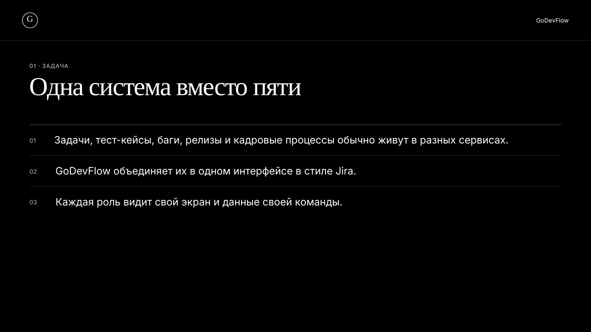
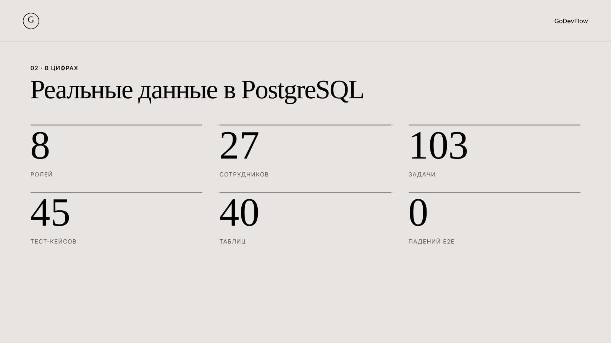
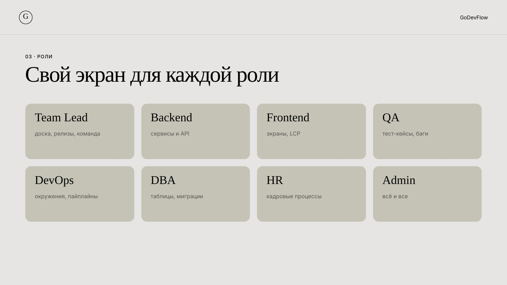
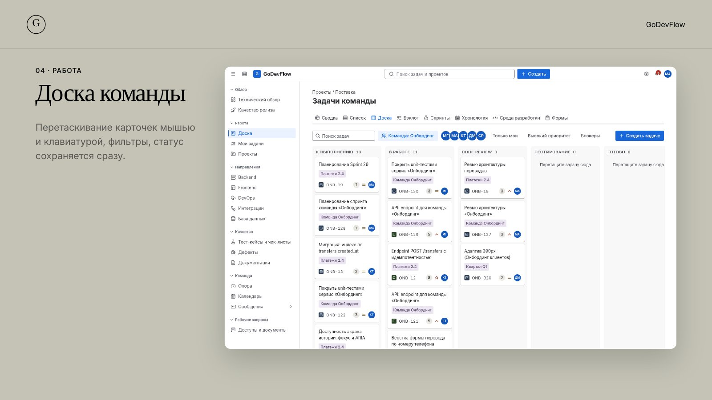
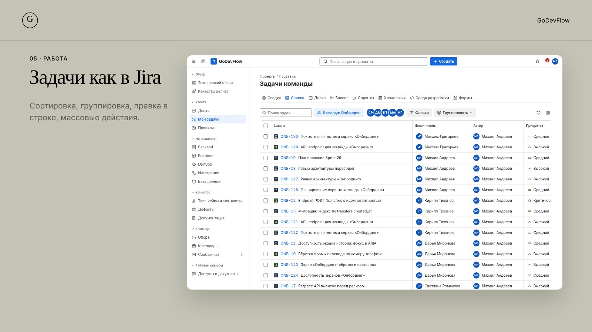
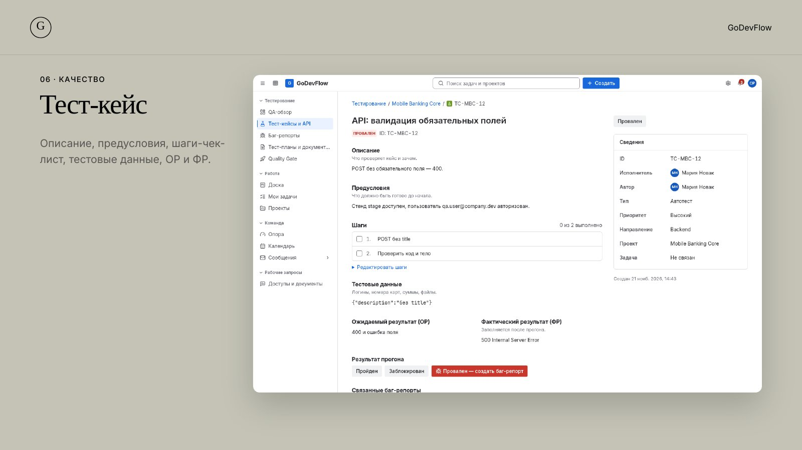
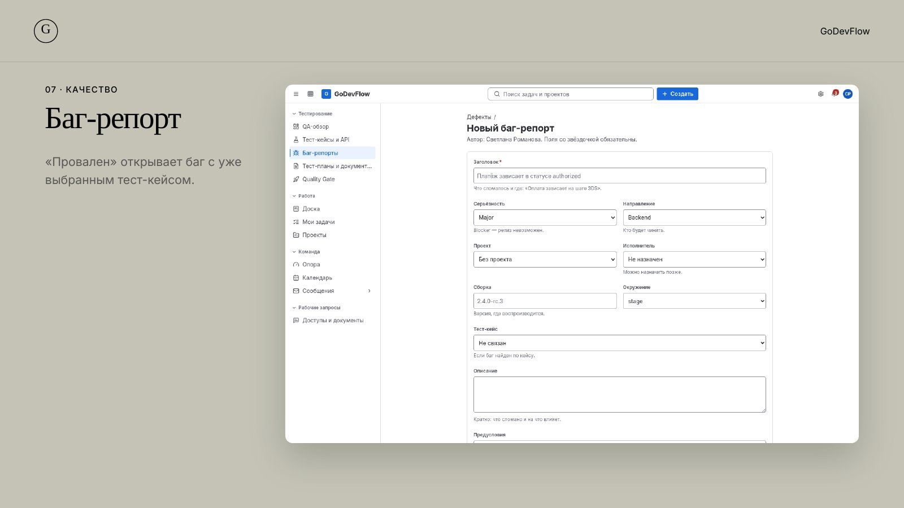
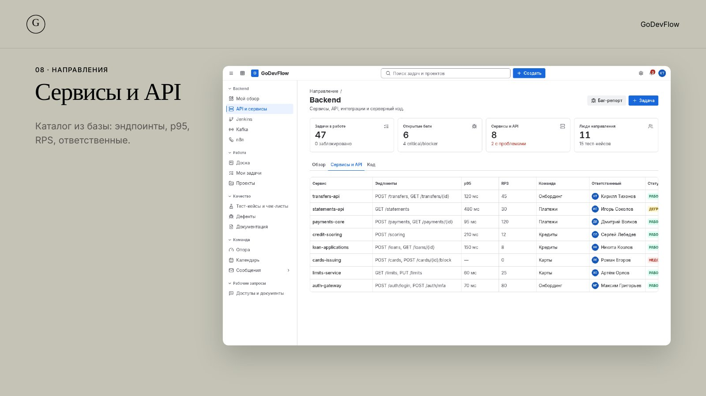
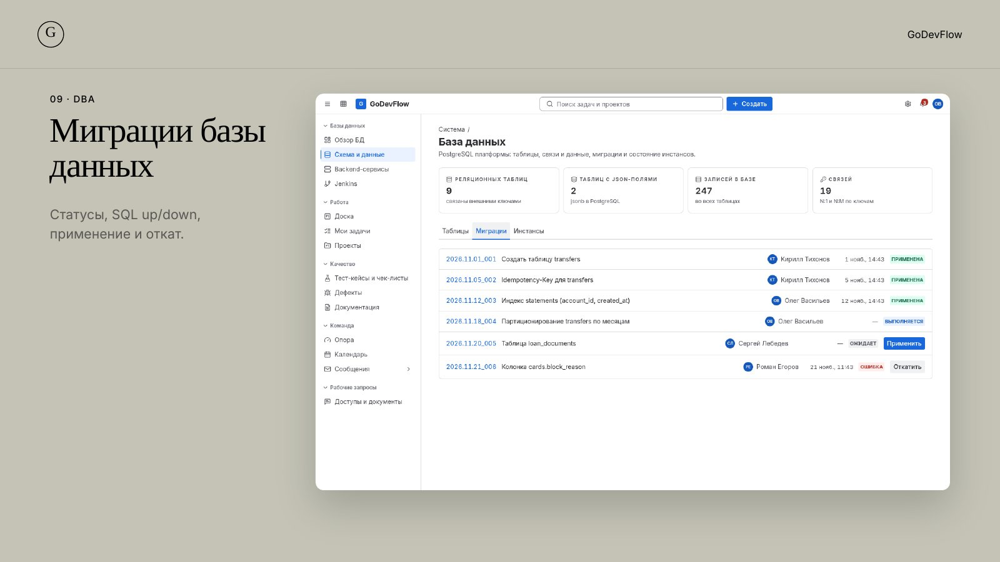
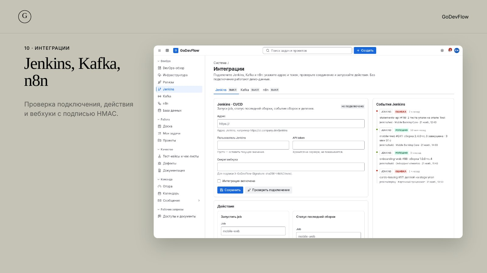
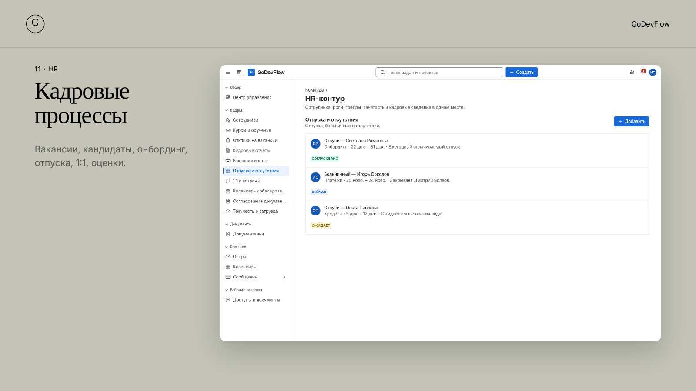
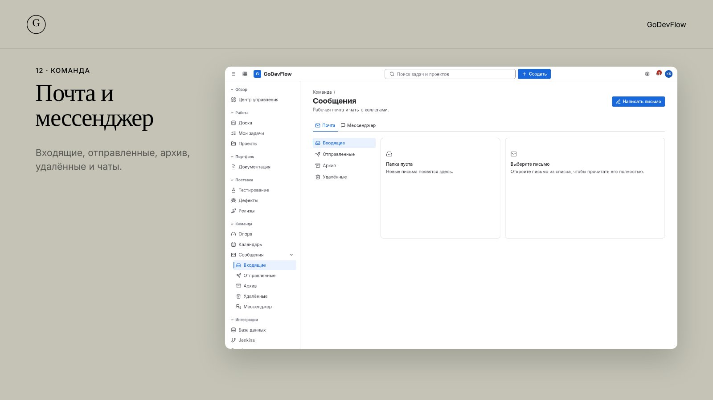
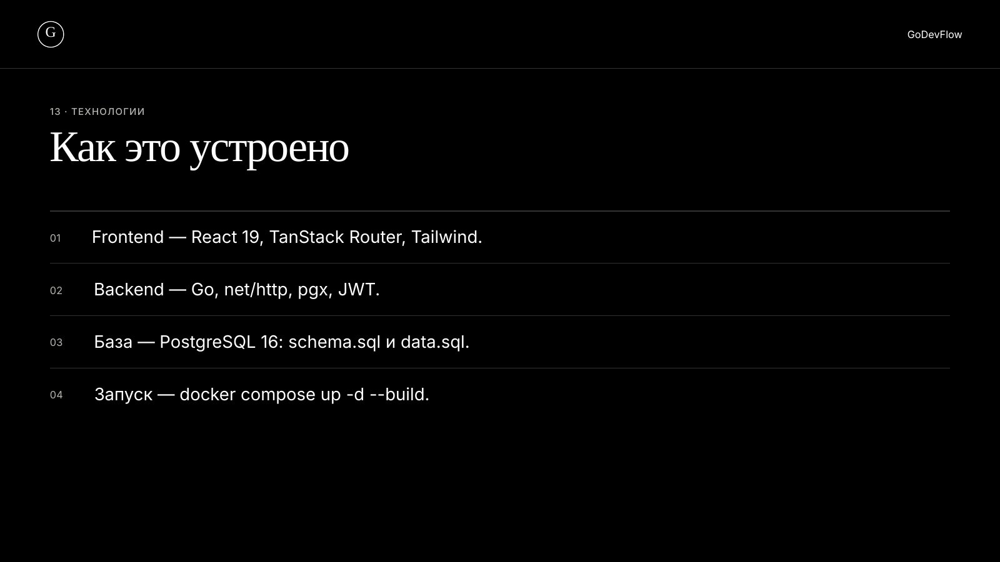
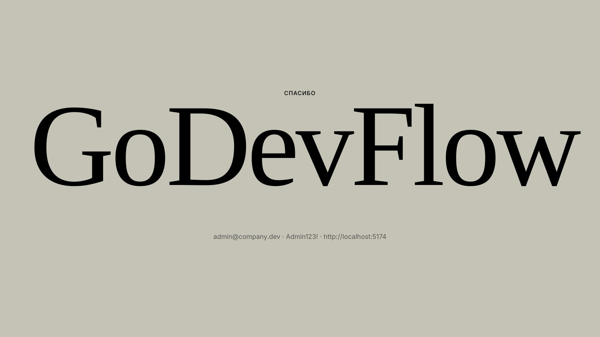
1 / 15